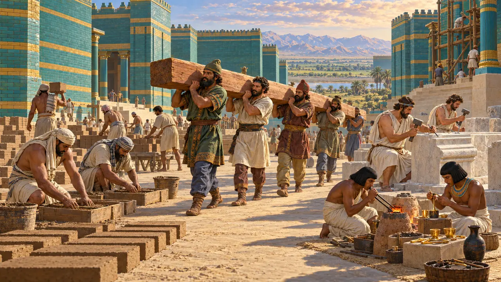
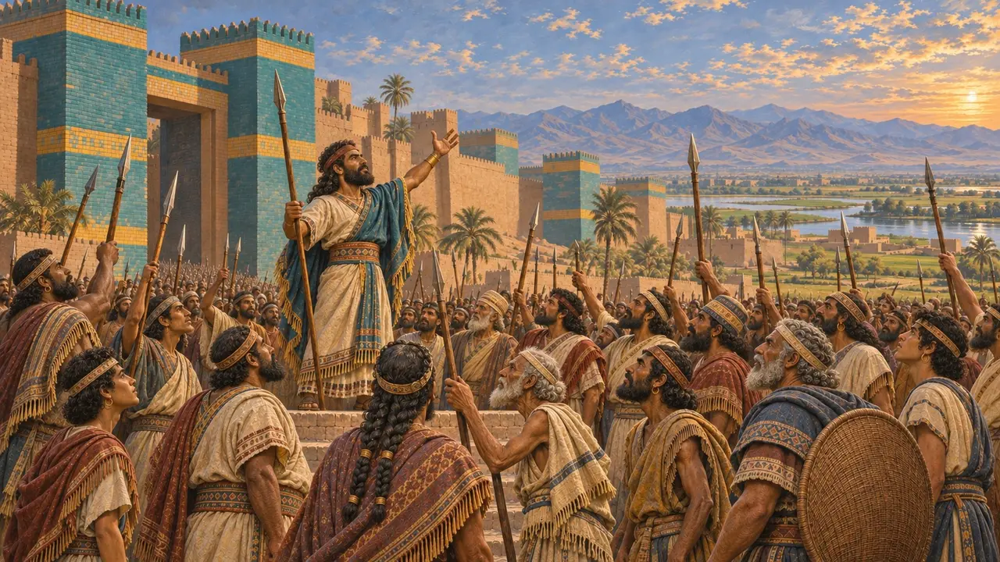
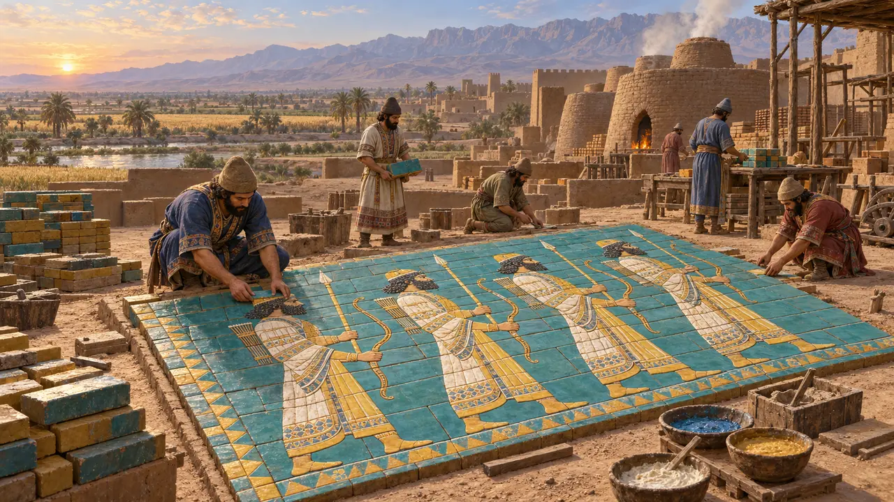
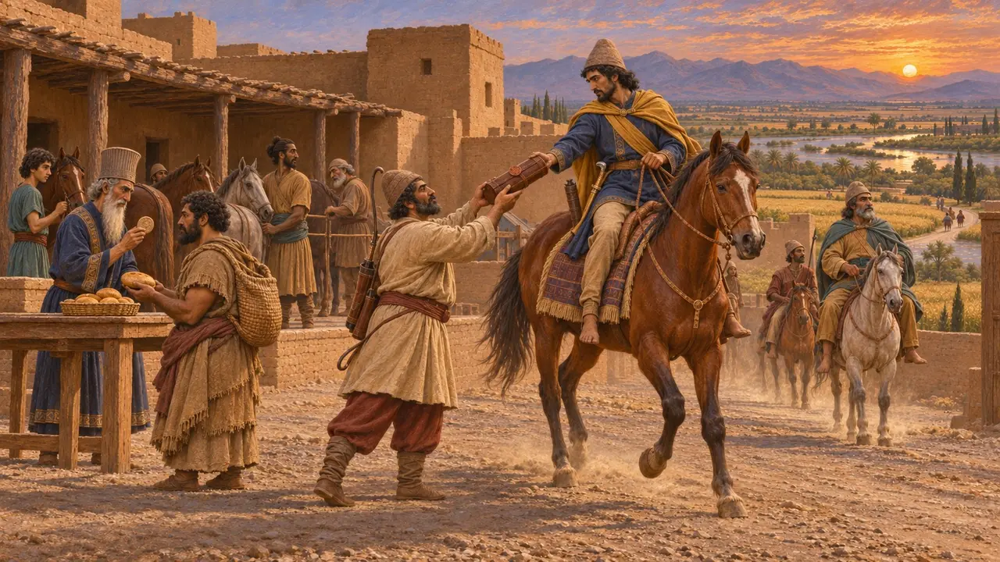
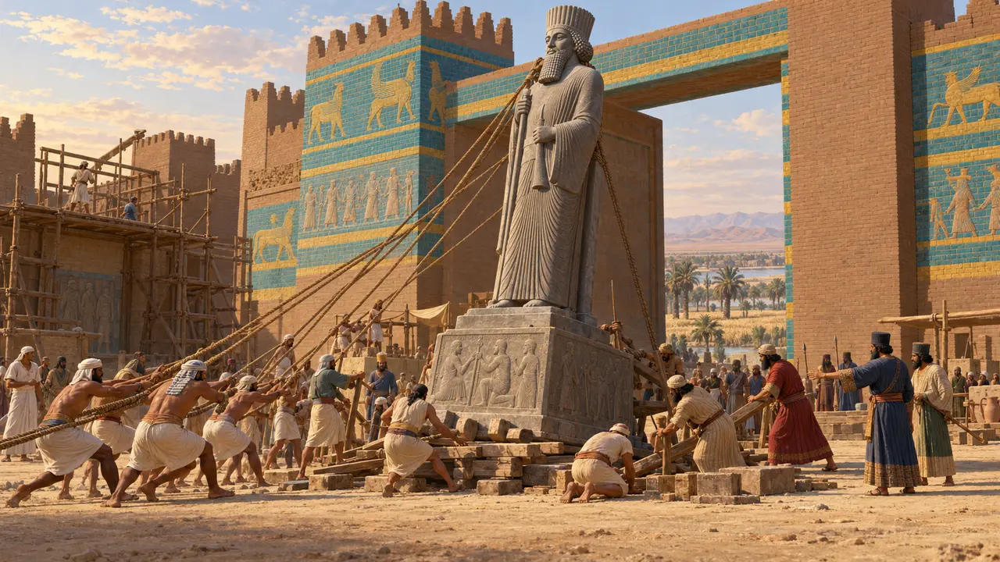
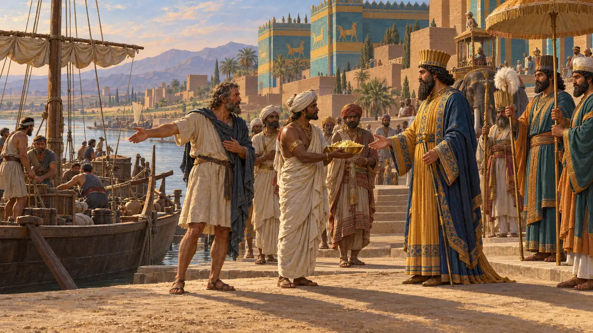
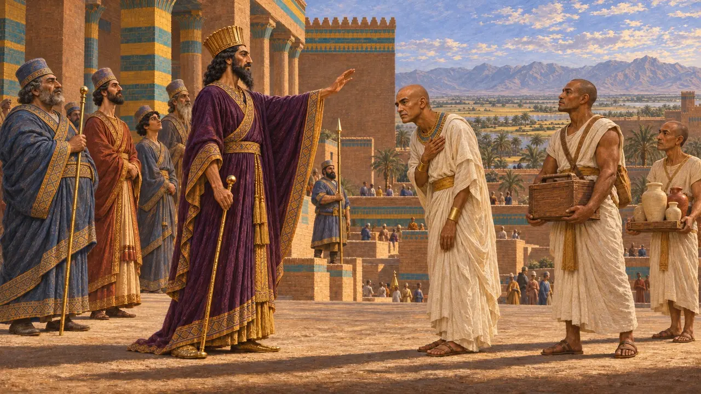

Niveau 5 : La Charte · Suse · 519–515 av. J.-C.
La Charte
Suse, où des artisans de nombreux peuples bâtirent le palais du Roi.
Encyclopédie › L'Histoire
Suse était la capitale de l'Élam deux mille ans avant que la Perse n'existe. L'Élam se souleva trois fois contre Darius. Une fois la région pacifiée, il fit de Suse sa résidence principale et y bâtit un palais de briques émaillées, consignant sur ses tablettes de fondation la provenance de chaque matériau.
- 522 BCE L'Élam se soulève
- 519 BCE Athamaita vaincu
- 515 BCE Le palais
- 497 BCE Le canal du Nil

L'Élam se soulève trois fois
Dans les sourcesAçina se souleva le premier et fut envoyé enchaîné à Darius. Martiya se souleva ensuite, et les Élamites le tuèrent eux-mêmes à l'approche de Darius. Dans la deuxième ou la troisième année du règne, Athamaita se souleva et Gobryas l'écrasa ; cette dernière révolte fut ajoutée plus tard sur la falaise.
Dans le jeu : Les Élamites d'Athamaita : quatre hommes sur dix sont des archers dont la portée égale celle des archers du Roi.
Behistun inscription sections 16-23, 71
La Charte
Dans les sourcesLa charte de fondation de Darius énumère tout : le cèdre du Liban, l'or de Sardes et de Bactriane, le lapis-lazuli de Sogdiane, l'ivoire d'Éthiopie, du Sind et d'Arachosie. Les Ioniens et les Sardiens taillèrent la pierre, les Mèdes et les Égyptiens travaillèrent l'or, les Babyloniens cuisirent les briques.
Dans le jeu : Les caravanes de la charte apportent le cèdre, l'or, le lapis-lazuli et l'ivoire que nomme la charte.
Susa foundation charter DSf

Brique émaillée
Dans les sourcesLes murs du palais resplendissaient de briques moulées et émaillées : rangées d'archers grandeur nature, lions et taureaux ailés en bleu, vert, jaune et blanc. Cet art venait de Babylone. Des fragments de la frise des archers sont conservés au Louvre.
Dans le jeu : Le four à briques émaillées produit les briques du palais.
DSf; Louvre, frieze of archers

La Route royale
Récit antiqueHérodote compte 111 relais de Sardes à Suse, soit environ quatre-vingt-dix jours de marche. Des cavaliers royaux se transmettaient les messages de relais en relais, si bien que « ni la neige ni la pluie » ne pouvaient les arrêter. Les tablettes de Persépolis confirment l'existence de ces relais, avec les laissez-passer scellés et les rations des voyageurs.
Dans le jeu : Les Relais routiers accélèrent les caravanes, et leurs cavaliers repèrent tôt les pillards.
Herodotus 5.52-53, 8.98; Persepolis Fortification tablets

Une statue venue d'Égypte
Dans les sourcesEn 1972, des archéologues français découvrirent à la porte de Suse une statue acéphale de Darius. Elle avait été sculptée en Égypte, dans le style égyptien, avec des textes en hiéroglyphes et en trois langues cunéiformes. Sa base montre vingt-quatre peuples sujets soutenant le Roi.
Dans le jeu : The Statue of Darius stands at Susa as a decoration, the one statue the King's towns raise.
Statue of Darius from Susa (National Museum of Iran)

Un canal vers la mer Rouge
Dans les sourcesDes stèles dressées le long du Ouadi Toumilat affirment que Darius ordonna de creuser un canal du Nil jusqu'à la mer qui va vers la Perse, et que des navires l'empruntèrent. Selon Hérodote, le pharaon Nékao l'avait commencé.
Darius's canal stelae (DZc); Herodotus 2.158, 4.39

Scylax descend l'Indus
Récit antiqueDarius envoya Scylax de Caryanda descendre l'Indus jusqu'à la mer, puis contourner l'Arabie jusqu'en Égypte, un voyage de trente mois. Ensuite, il conquit les terres de l'Indus.
Herodotus 4.44

Read next: the topics of La Charte
Batailles et événements
La troisième révolte élamite · La restauration par Darius de la Maison de vie de Saïs · La campagne de Darius contre Skunkha · La Charte de Darius à Suse · Le voyage de Scylax · Le canal de Darius du Nil à la Mer Rouge
Bâtiments
Statue of Darius · Palais de Darius · Four à briques émaillées · Relais routier
Soldats et navires
Population
Cambyse · Oudjahorresnet · Darius le Grand · Gobryas · Athamaita · Scylax de Caryanda · Néchao II
Peuples
Les Perses · Les Élamites · Les Cissiens · Les Babyloniens · Les Phéniciens · Les Égyptiens · Les Indiens · Les Éthiopiens
Lieux
Persépolis (Parsa) · Suse · Babylone · Sardes · Saïs · Arachosie · Sogdiane · Du Liban · Bactria · Egypt · Elam · Le fleuve Indus
Faune et climat
La gazelle · L'onagre · Le sanglier · La cigogne blanche · Le lièvre · Le chacal doré · Le lion · Canards sauvages · L'autruche · Le milan · Le pigeon biset · Le choucas · La grue · L'hirondelle · Chauves-souris · La chevêche · La corneille mantelée · Tempêtes de sable · Brume matinale